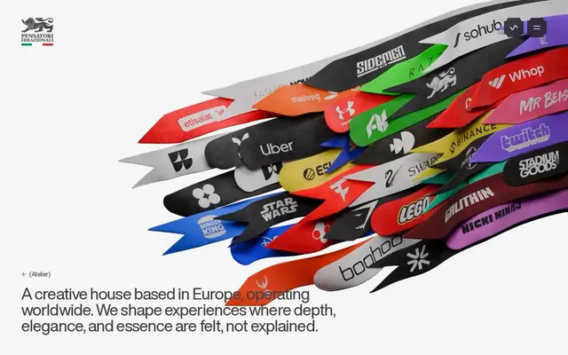
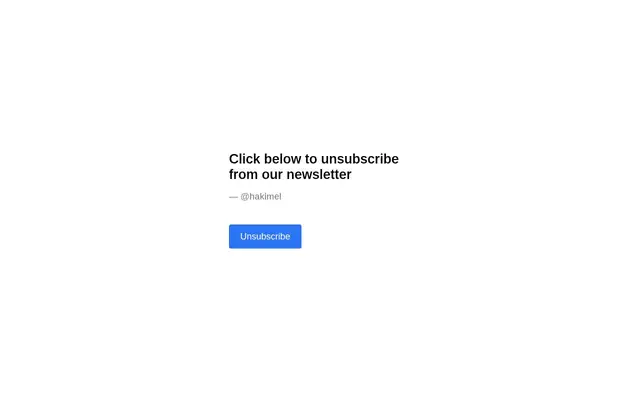
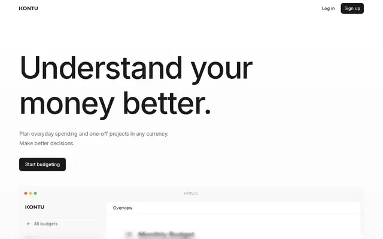
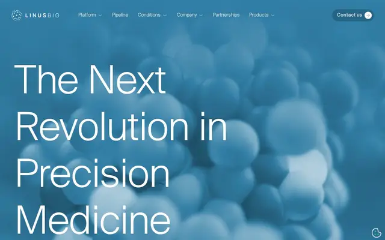
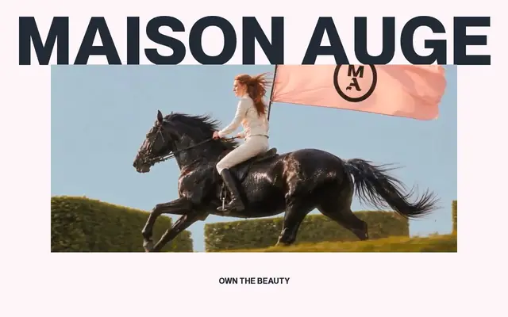
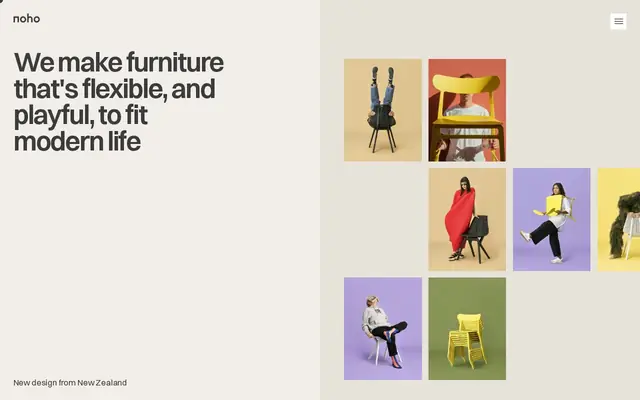
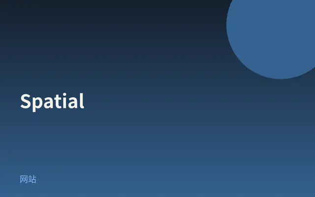
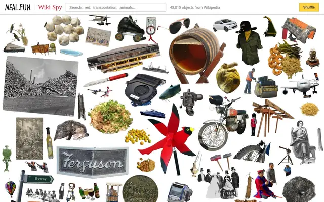

2026-09-20 · 当日精选
Pensatori Irrazionali
今日 SOTD：帮品牌把产品深度做成可感的数字体验，优雅而有密度。

打开网站 ↗当天另外 7 个

小游戏
Click me if you can
Hakim 小实验：按钮一直躲你，把「点一下」做成追逐游戏。

App UI
Kontu
多币种共同记账落地页：留白 + 模糊仪表盘卡片，冷静的产品 UI 切片。

App UI
LinusBio
精准医疗平台站：把复杂生物标志物叙事做成可逛的产品界面。

网站
Maison AUGE
奢侈创意工作室站：品牌、包装、空间与数字设计的精致视觉世界。

网站
Noho
近日 SOTD：产品叙事站，开发奖加身，界面节奏干净利落。

网站
Spatial
柏林音乐节 one-pager：巨型字母扭曲成空间，滚动驱动的实验黑白场。

小游戏
Wiki Spy
neal.fun 新玩具：在维基百科式情报里当间谍，点开就停不下来。
设计雷达 · 每天 8 个值得看的网站、App UI 和网页小游戏